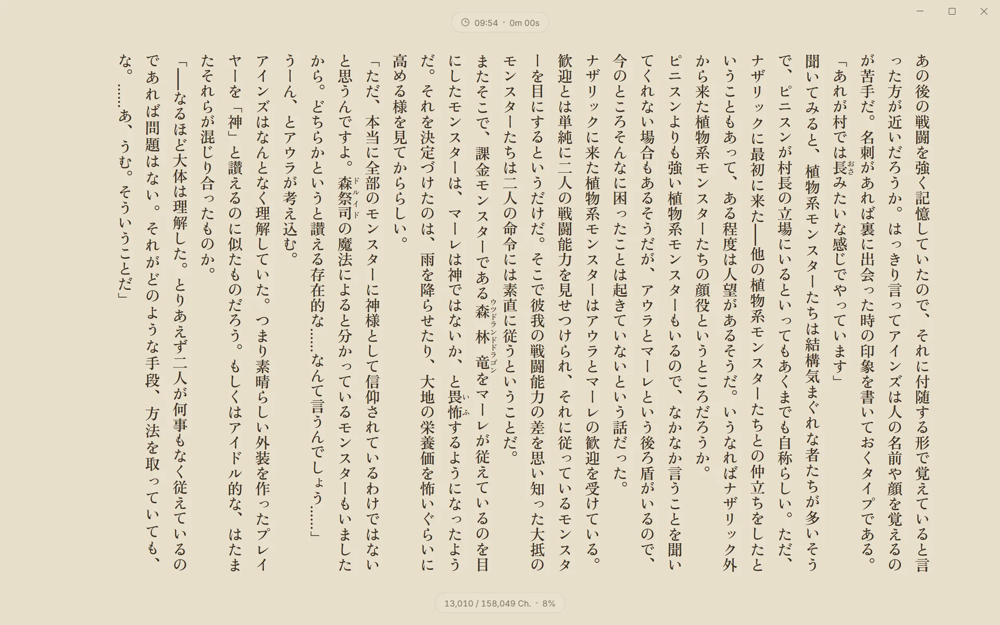
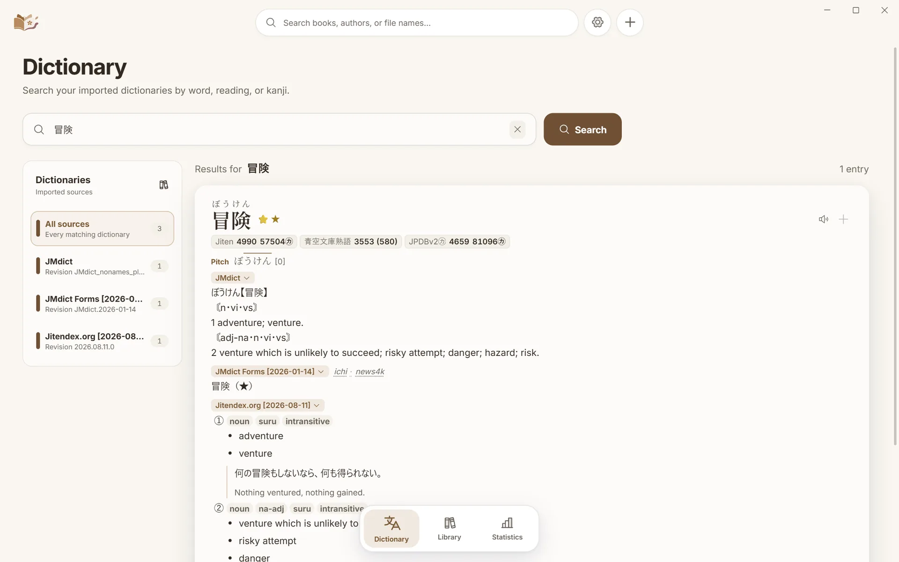
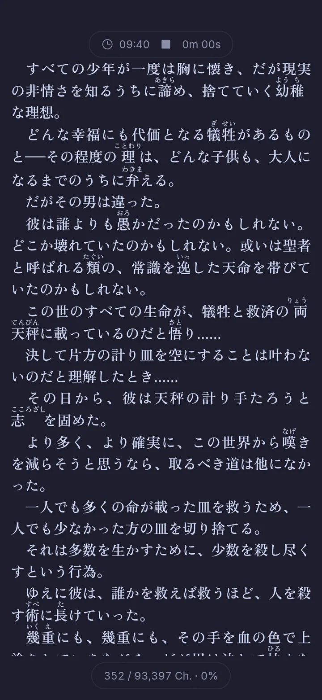
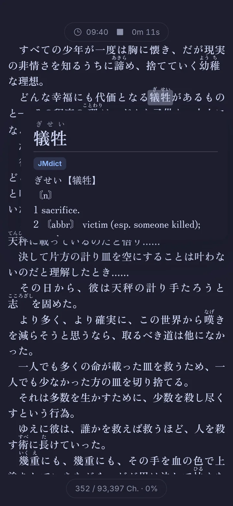
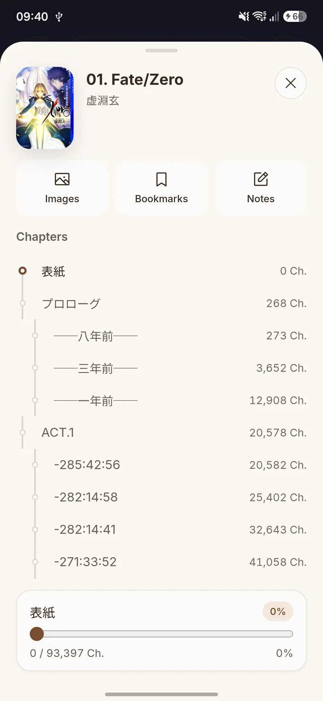
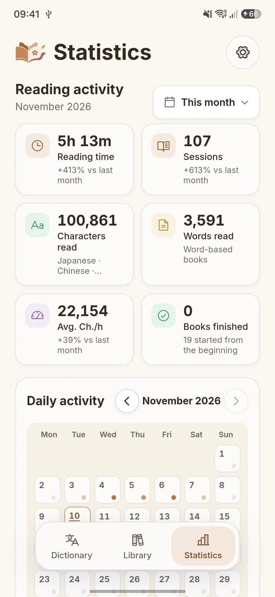

Komori is a lightweight EPUB reader for Windows and Android. Look up any word without
leaving the page, see how much you read, and make Anki cards with one click.
Made for long books in a language you are still learning, and just as comfortable for
the ones you already know.
A Library that tidies itself
Real covers and progress, search, filters and sorting, and groups by series,
language or author. Folders and drag and drop import even messy collections, reading
volumes and series from file names.
A Reader you can shape
Continuous, semi-continuous, paginated and visual-novel modes, horizontal or
vertical writing, detailed typography, bookmarks, notes, highlights, find in book
and an image gallery.
Lookup in ten languages
Japanese, English, Spanish, French, Portuguese, Italian, German, Russian, Korean and
Chinese, each with its own dictionaries, deinflection and word audio. Furigana, IPA,
pitch accent, frequency and nested lookups.
A full Dictionary page
Search by word, reading or kanji and get the same rich results, with sources in the
order you choose and a kanji card for single characters.
Reading statistics
Characters or words read, time and speed, an activity calendar with editable days, a
library overview and a character explorer. Recording pauses when you look away.
One-click Anki cards
Set it up once, then add a card from the popup with the reading, definitions,
frequency, word audio and book cover, in a deck for each language. The Lapis note
type is bundled.
On your phone too
The Android app has the same Library, Reader, lookup, Dictionary and Statistics,
made for touch: tap a word to look it up, long press to select, and add words to
AnkiDroid.
Seamless PC and phone sync
Pair once with a short code. The phone opens the PC’s books, copies its
dictionaries, and keeps positions, bookmarks, notes and statistics in step, all on
your own network.
Themes for every mood
Fifteen Reader themes plus your own, a background image, eight application themes
and a custom one, downloadable and imported fonts, and sixteen app icons.
At home on Windows
Launch at startup, start in or minimize to the tray, reopen the last book and
remember the window’s place. Small, fast and native-feeling.
Discord status
If you turn it on, your Discord status shows the book you are reading and your
progress while you read. Off by default.
Your data stays yours
Automatic snapshots, backup export and import, signed updates you approve, and no
telemetry. Komori reads your files where they are and never changes them.
On Windows
A calm desktop for long reading sessions
A floating top bar, a dock for the three pages you live in, and nothing else in the
way of the book.
Library. Continue where you stopped, then browse by series,
language or author, with progress and character counts on every card.

Reader. Vertical or horizontal writing in four reading modes,
with a footer for your position, the clock and reading speed.
Lookup popup. Hold Shift over a word for its reading, pitch
accent, frequency and definitions, then add it to Anki with the + button.
Sidebar. Chapters as a timeline, plus the book’s images,
bookmarks, notes and search, a keypress away.

Dictionary. The same entries as the popup on a full page, with a
rail of the dictionaries that matched.
Statistics. Time, characters and speed, and a calendar that shows
what you read each day.
Settings. Eight application themes and a custom one, sixteen app
icons, and an interface in eleven languages.
On Android
The same reader, made for touch
Tap a word to look it up, swipe or tap to turn pages, and pick up exactly where you
stopped on the PC.
Library
The phone’s own books beside the PC’s, ready to open or keep offline.

Reader
Full-screen text with your themes, fonts and reading modes.

Tap to look up
The popup opens beside the word, and a tap inside it looks up the next one.

Contents
Chapters, images, bookmarks, notes and a slider through the whole book.

Statistics
One reading history, whichever device you read on.
Sync
Stop on one, continue on the other
Your phone and your PC talk to each other directly over your own network. There is
no account and no cloud in between.
The phone lists the PC’s books and opens them without copying files.
It copies the PC’s dictionaries, so lookups match on both.
Reading positions, bookmarks, notes and statistics stay in step both ways.
Allow phones on the PC
Turn on Allow phones to connect in Settings > Integrations > Devices. Komori
shows an address and a short pairing code.
Enter the code on the phone
Type the address and code in Settings > Sync. Both devices must be on the same
network.
Read anywhere
The PC’s books appear in the phone’s Library, and your place follows you.
Download
Get Komori
Free software under the GNU GPL.
The latest version is , released
.
Windows
64-bit Windows 10 and 11
Download the installer and run it.
The installer is not code-signed, so Windows SmartScreen may warn about an unknown
publisher. Choose More info, then Run anyway.
Add a folder of EPUBs, or drop files on the Library. Komori offers free starter
dictionaries the first time you look a word up.
Komori checks for a new version when it starts and asks before installing it. Updating
keeps your data. See the installation guide, the
changelog or
all releases.
Private by design
A local app, not a service
Your library, reading history, notes and dictionaries stay on your devices. Komori
uses the network only to check for updates, fetch word audio when you ask for it, and
download the dictionaries or fonts you choose.
No account, telemetry, analytics or crash reporting.
Your EPUBs and dictionary archives are read where they are, never changed.
Automatic snapshots, with backup export and import.
Signed updates, installed only when you approve them.